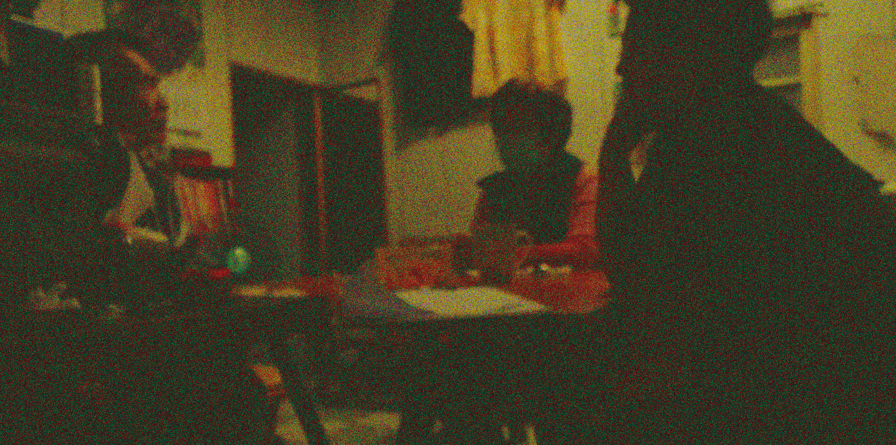
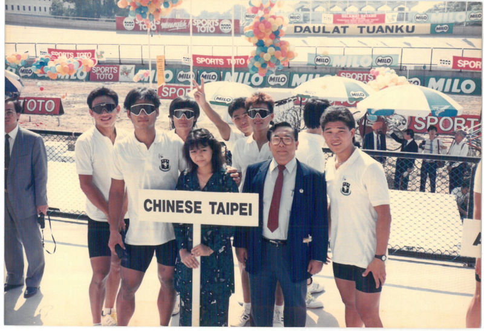
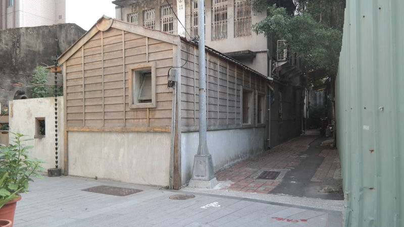
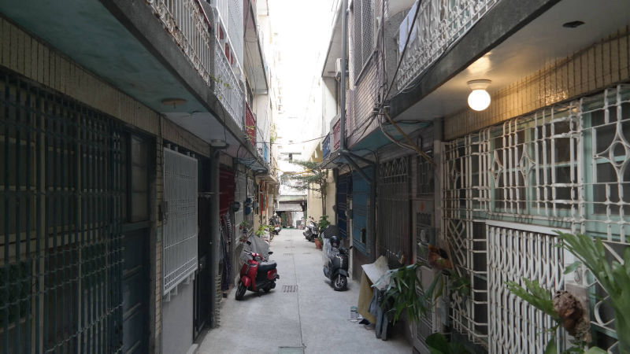
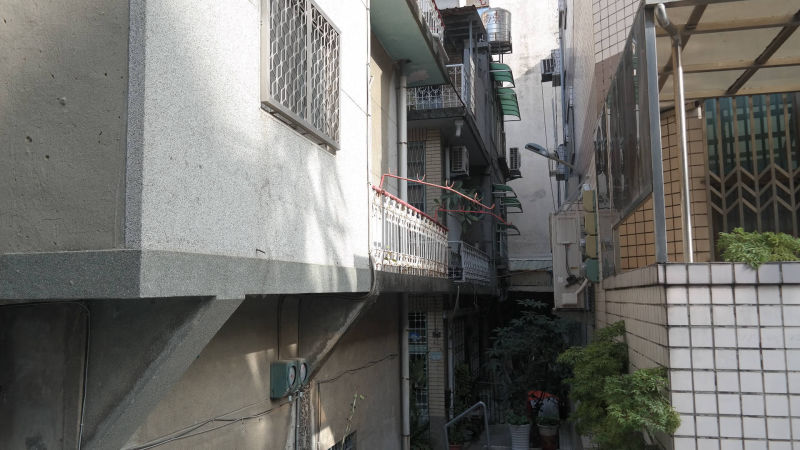
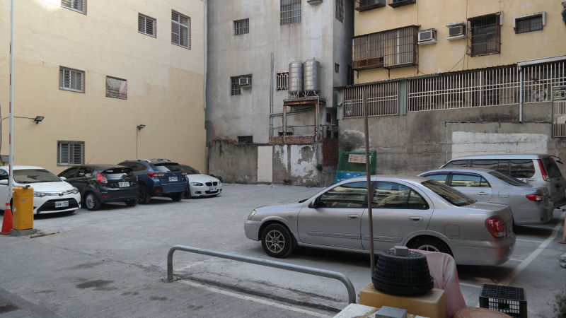
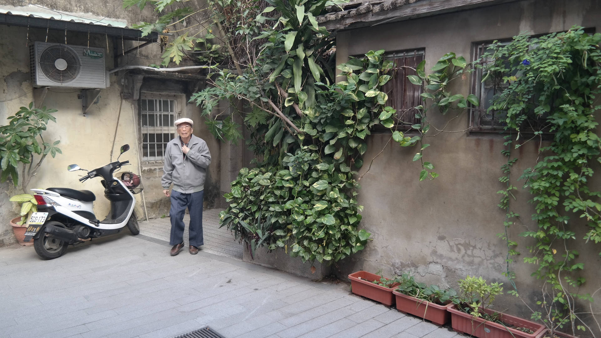
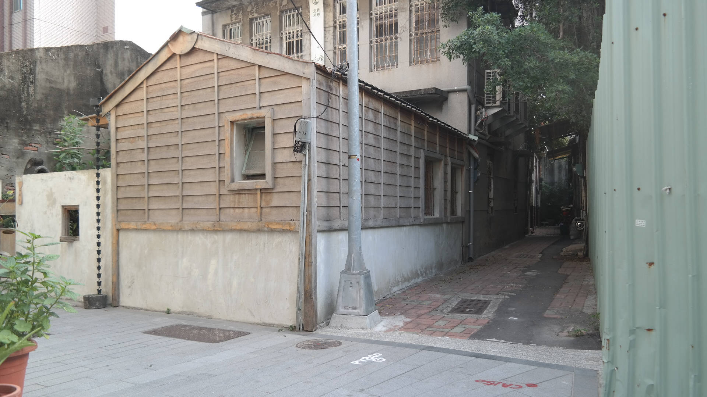
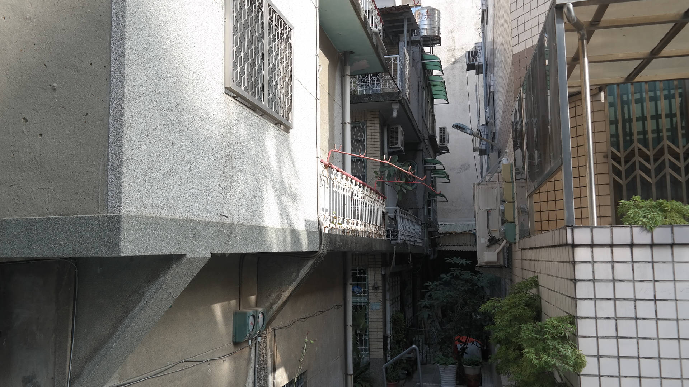
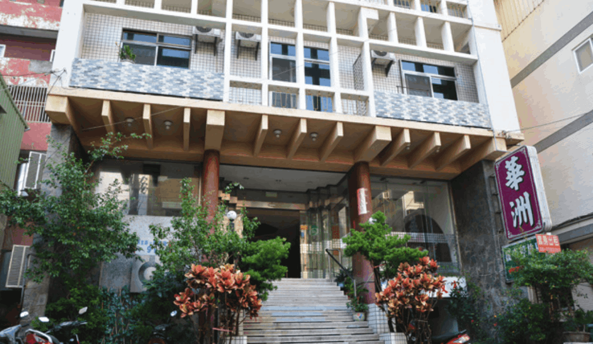

煮故事 we're living here
O8D ACT
free simple web templates

大家來閒聊 | 是歷史更是故事
大家來閒聊
是歷史更是故事
在一場茶餘飯後，居民陳瑞隆、劉珠華、李美容，聊著地方上的過去，從過去
的所見所聞，或是家族所留傳下的記憶，一塊一塊拼圖出社區一角的過去身世
，但更值得的是透過他們這一代人，對那時代的觀看，我們可以瞭解在彼時現
場下，這些老百姓面對這樣的社會風氣，所產生出的心情。
※閱讀提醒：以下三位分別以姓名最末稱呼-隆、華、容
從台「獨」到台「獨」
-獨立精神到一人在台的苦笑談-
隆：時代不一樣，不能用現代觀點去評論那個時代。
這永遠不公平。那個時代如果不這麼做，現在可能還在亂。台灣講台獨不台獨，是有時代背景的關係，現在講的台獨，跟日據、光復初時，是變質的，我永福路的家，以前我在念書的時候，都有便衣在站，妳們（指李美容）都不曉得，就我伯父家。
容：便衣要抓誰？
華：那時候有在讀書，讀的越高，政府都會注意，他們比較有那樣的思想，但他們不是都在美國嗎？
隆：那是後來的事，他們三個那時候還沒有去美國時，就有此意識，三個一起到美國後，都在搞這
個。為什麼便衣會來，就是說台灣最早期有台獨意識的，就是我堂哥他們。但為什麼會想搞這個？
華：美國比較民主
隆：跟這個沒關係，台灣這塊土地處於戰爭結束，屬於三不管地帶，當初台灣被大陸割給日本，日本戰敗後又把台灣交給美國管，日本沒還給中國，這個歷史到現在扯不清。那時候我出門，便衣就站在那邊阿！可是他們已經過去美國很久了。那時候的台獨是真的要讓台灣獨立，那時台灣沒獨立成功，就是一錯之下，日本都已經撤退了。我堂哥們去美國的時候，我還在媽媽的手裡，所以他們對我的印象，就是：『baby在哪裡？』我二哥、三哥曾回來，他們是這樣問。
容：我都不知道變這麼老了（抱嬰兒樣），哈哈。
隆：那群堂哥，都跟現在住在隔壁的堂哥一樣歲數。
容：葉老師（指隔壁）(圖1)。
隆：都88歲，90、90幾歲這樣，我現在快70歲。
家族事情現在都我在處理，我是台獨的，現在還是。
容：趕快被抓去關（打趣樣）。
隆：我們家族的同輩，都跑去美國了，就剩我自己，所以我是台灣唯一。
容：哈哈，原來台獨是指這個，自己一個人住在台灣。
黑漆漆的無尾巷、南巷
隆：我39年出生，光復是34年，我堂姊們受過日本教育，我大姊70多歲，就沒受過日本教育。我在永福路空白一段時間，讀書都在外面，高中畢業以後，當兵回來就在外頭教書，在樹人醫校教書，又到中華醫專教4年，後來才到左營8年。所以美容搬來時，我不曉得，以前僅知道有這個人。是快退休， 我太太有在過來，我才跟來開始跟美容他們一起共餐。3年半前，退休後，又認識比較深。
容：他在捐血中心上班。
隆：我在捐血中心退休的，那個時候為什麼會在捐血中心，沒有再回去左營，因為我舅舅在捐血中心做主任，就要我留下來幫忙。我舅舅以前是國大代表，是衛生署副署長派下來的。
華：回去了嗎？
隆：回去了，90幾歲了。
容：你不是教自行車嗎？
隆：對阿，我帶過1984、1988奧運台灣代表隊。在外頭教書，回來累了都窩在家裡，或是跟朋友出去在外頭瀟灑。怎麼可能晚上來走巷道。(圖2
)
容：以前在無尾巷工作時，我沒走到現在這一條，都直接走民生路出去。我搬來這裡時，妳開了嗎？(圖3)
華：68年開的
隆：以前下去的轉角（指金都旅社）有一片大圍牆。(圖4.5)
容：以前那裏，熱鬧的很。
隆：以前妳還不知道啦。
容：那時我還沒來。
隆：以前那裏（指老人巷頭）到賣豆腐那間，全部都是旅館，以前那塊地，跟那兩排房屋，都是日本式的花園別墅。
容：華洲飯店還沒蓋起來的時候嗎？
隆：對，不知道叫做台灣什麼的，是日本式旅館。樹木都很大。小時候經過那裡，黑漆漆會怕。
華：像森林這樣。主要建築外，全部都是庭院，圍牆旁邊都是大樹。
容：怪不得你會怕，黑漆漆。
隆：沒有路燈阿，又是小巷子，你們都不知道吧？
容：我不知道阿，我來台南時，就華洲飯店了(圖6)
隆：忘記是我國小幾年級。而永福國小，日本時代是個辦公室，所以現在永福國小在重建，說有挖到古蹟，日據時代才蓋那個，之前是清朝的。那時候還有個胡適紀念館，你上網找就有了。那裏以前不是平的耶！是個小山丘，你看國小後面有個巷子，跟國小旁邊那條路，差多高。
華：我們家以前也都這樣。
隆：台南本來就是東高西低，從火車站要往這裡來，騎腳踏車都不用踩的。所以我以前在永福念書的時候，要先爬過一個樓梯，到中央平台，好像是宿舍、辦公室，然後再爬上一個坡才是教室。
華：我現在在蝸牛廣場旁邊的公寓住家，跟我以前開店的地方，就是賣豆腐對面的空地停車場，也差了將近一樓高，一樣都是一樓喔，要從開店到住處，是要爬樓梯的。(圖7)
隆：這裡就也是我剛剛講的日式花園別墅，都是同一塊地。當初應該是同一的人買走，就分開來賣。其實這日本式的旅館，在公園路跟民族路那附近的轉角處也有一間，到遠東百貨過來10公尺左右，將近民權路，在社教館的前面。社教館有一座水池，我小時候都從家裏跑到中山公園去抓魚，都會經過這裡，社教館我是不曾進去，改成吳園才進去的，也才知道它通剛剛我說的日本旅館。同樣在天公廟後面也有一間，是做餐廳的，社區這一間，就都類似這樣的建築。
(圖1) 住在李美容隔壁的葉老師，是陳瑞隆的堂哥。

(圖2) 圖左後三是陳瑞隆，帶領中華隊征戰各地時期的樣子。

(圖3) 島旬料理隔壁巷子就是所謂的無尾巷。

(圖4) 在現稱老人巷的範疇，都是那間日式花園別墅的所在地。

(圖5) 在現稱老人巷的範疇，都是那間日式花園別墅的所在地。
(圖6) 尚未閒置時的華洲飯店外觀。

(圖7) 劉珠華的鈕扣店曾經開業與此，現為旅店的停車場。




Previous
Next
Close
< 上一篇：草芥的時代奮鬥
下一篇：益春藥房